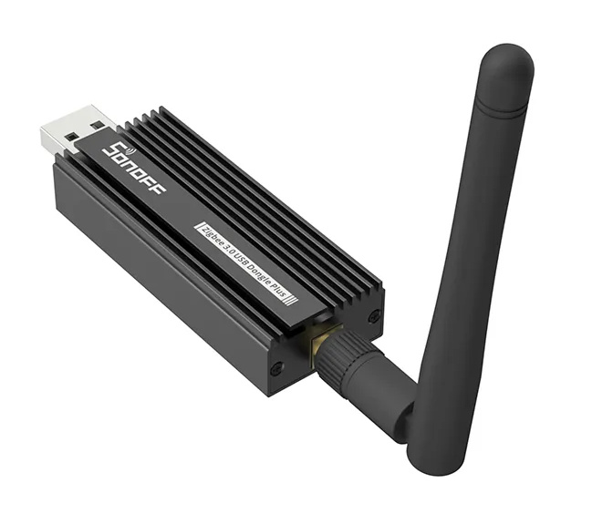
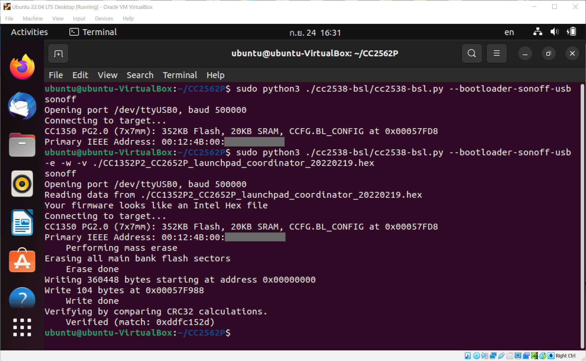
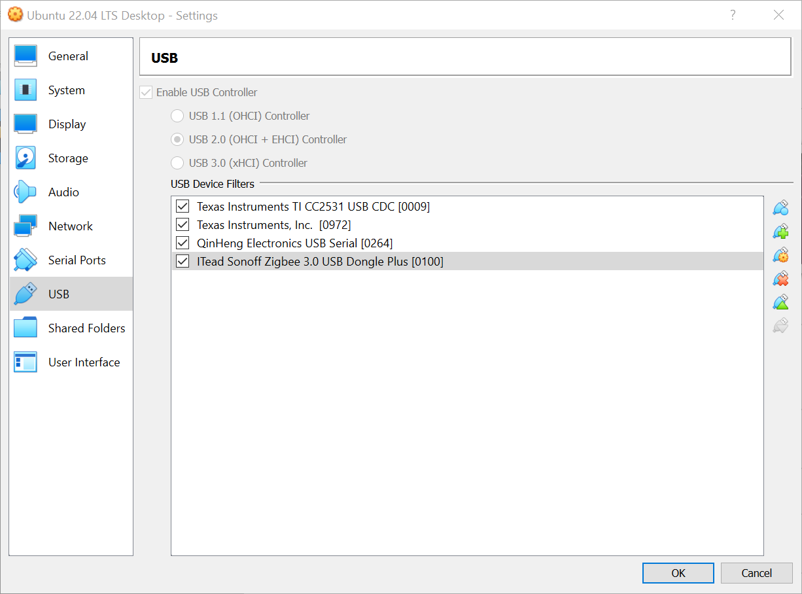
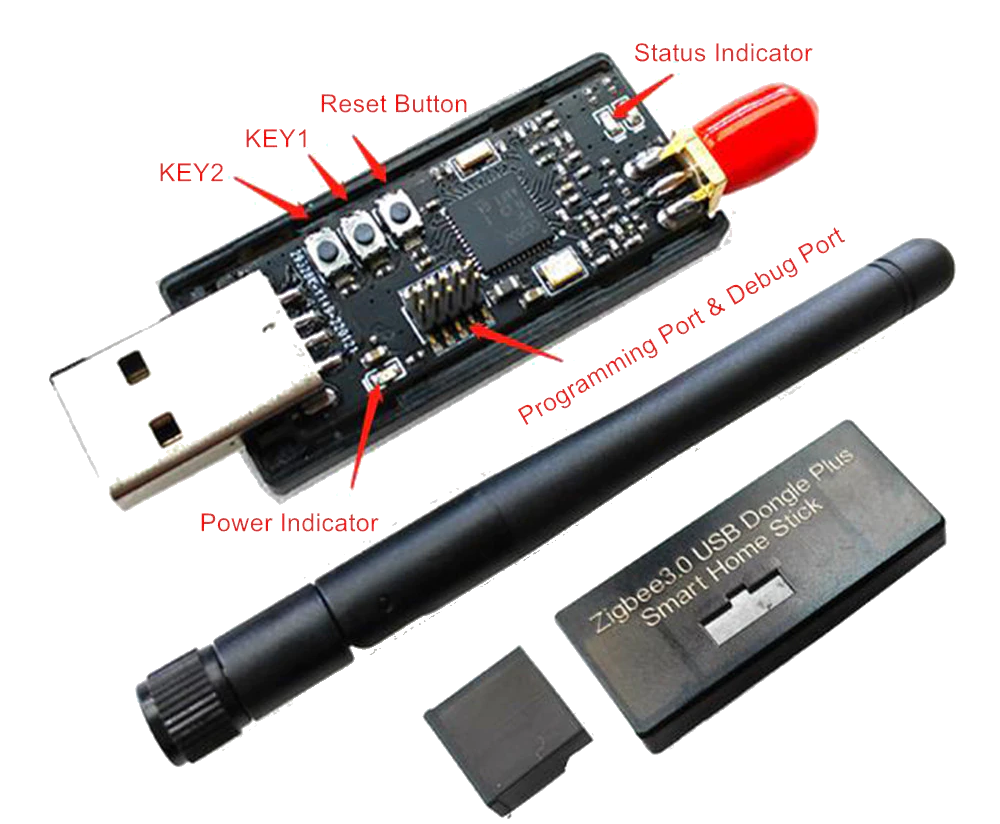
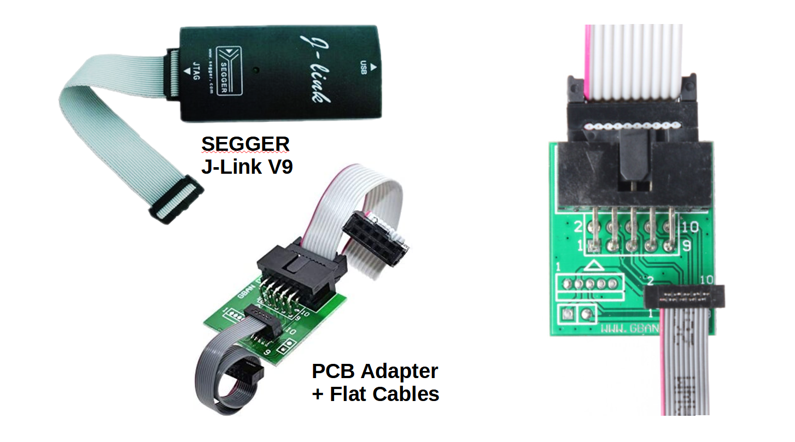
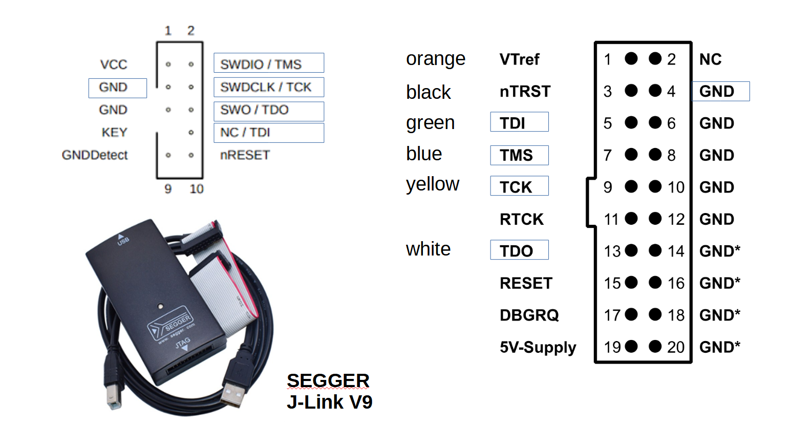
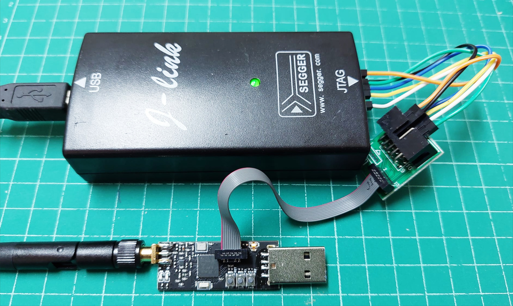
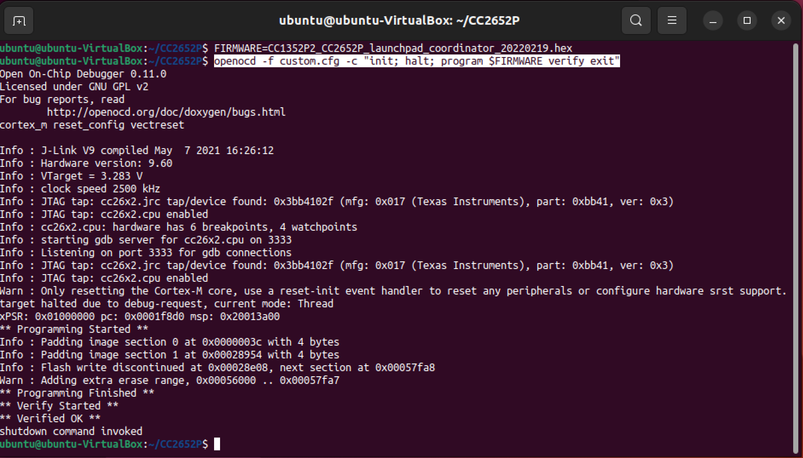

การติดตั้งเฟิร์มแวร์ ZigBee 3.0 สำหรับอุปกรณ์ CC2652P USB Dongle#
▷ อุปกรณ์ CC2562P USB Dongle#
อุปกรณ์ที่ได้นำมาทดลองใช้งานคือ Itead / Sonoff Zigbee 3.0 USB Dongle Plus ("ZBDongle-P") ผลิตในประเทศจีน ซึ่งใช้ชิป CC2652P และทำงานได้เหมือนชิป CC1352 (Sub 1-GHz & 2.4 GHz) ของบริษัท Texas Instruments (TI) แต่ใช้ได้แค่ความถี่ 2.4GHz

รูป: อุปกรณ์ Sonoff Zigbee 3.0 USB Dongle Plus
▷ Z-Stack Firmware#
ในการเขียนข้อมูลจากไฟล์เฟิร์มแวร์ไปยังชิป CC2652P ของอุปกรณ์ USB Dongle
สามารถทำได้สะดวก ไม่ต้องใช้อุปกรณ์เสริม เนื่องจากตัวชิปมี Serial Bootloader และเชื่อมต่อกับ
USB-to-Serial Interface ได้ และสามารถใช้โปรแกรม Python ที่มีชื่อว่า cc2538-bsl
ไฟล์เฟิร์มแวร์ Z-Stack v3.x.0 สำหรับอุปกรณ์ CC2652P USB Dongle แบ่งออกเป็นสองประเภทคือ
- Coordinator: ทำให้อุปกรณ์ CC2652P กลายเป็นอุปกรณ์ ZigBee Coordinator
- Router: ทำให้อุปกรณ์ CC2652P กลายเป็นอุปกรณ์ ZigBee Router คือ สามารถเชื่อมต่อกับอุปกรณ์ Coordinator และ Routers หรือ End Devices ในระบบเครือข่าย
การทำคำสั่งเพื่อติดตั้งแพ็กเกจ cc2538-bsl
(CC13xx / CC2538 / CC26xx Firmware Flasher พัฒนาโดย Jelmer Tiete) สำหรับ Linux/Ubuntu มีขั้นตอนตามลำดับดังนี้
# Install Python and packages.
$ sudo apt install -y python3 python3-pip python3-setuptools
$ pip3 install pyserial intelhex python-magic
# Download the 'cc2583-bsl' repository from Github.
$ git clone https://github.com/JelmerT/cc2538-bsl
เมื่อเสียบอุปกรณ์ CC2652P USB Dongle เข้ากับพอร์ต USB ของคอมพิวเตอร์ผู้ใช้ Linux ให้ลองทำคำสั่งต่อไปนี้
$ python3 ./cc2538-bsl/cc2538-bsl.py -h
ถ้าต้องการให้ผู้ใช้ทั่วไปสามารถเข้าถึงอุปกรณ์ได้ ให้สร้างไฟล์ต่อไปนี้เพื่อนำไปใช้กับ udev
$ sudo nano /etc/udev/rules.d/99-usb-serial.rules
# CP210x
SUBSYSTEMS=="usb", ATTRS{idVendor}=="10c4", ATTRS{idProduct}=="ea60", MODE="0666"
เมื่อแก้ไขและบันทึกการเปลี่ยนแปลงลงไฟล์แล้ว ให้ทำคำสั่งต่อไปนี้ เพื่ออัปเดตการทำงานของ udev
$ sudo udevadm control --reload
$ sudo udevadm trigger
เพิ่มชื่อผู้ใช้เข้าไปอยู่ในกลุ่ม dialout
$ sudo usermod -a -G dialout $USER
ทำคำสั่งเพื่อตรวจสอบข้อมูลเกี่ยวกับอุปกรณ์
$ ls -l /dev/serial/by-id
usb-ITead_Sonoff_Zigbee_3.0_USB_Dongle_Plus_XXXXX -> ../../ttyUSB0
$ python3 ./cc2538-bsl/cc2538-bsl.py --bootloader-sonoff-usb
sonoff
Opening port /dev/ttyUSB0, baud 500000
Connecting to target...
CC1350 PG2.0 (7x7mm): 352KB Flash, 20KB SRAM, CCFG.BL_CONFIG at 0x00057FD8
Primary IEEE Address: 00:12:4B:00:XX:XX:XX:XX
ดาวน์โหลดไฟล์เฟิร์มแวร์สำหรับ ZigBee Coordinator โดยเลือกไฟล์ที่ใช้ได้กับ Itead / Sonoff CC2652P USB Dongle
เช่น ไฟล์ CC1352P2_CC2652P_launchpad_coordinator_20220219.zip
# Extract the .hex firmware file from the archive file.
$ unzip CC1352P2_CC2652P_launchpad_coordinator_20220219.zip
# Flash the USB device with the .hex firmware file.
$ python3 ./cc2538-bsl/cc2538-bsl.py --bootloader-sonoff-usb \
-e -w -v ./CC1352P2_CC2652P_launchpad_coordinator_20220219.hex

รูป: ตัวอย่างการทำคำสั่ง Bash Shell และใช้ Ubuntu 22.04 VM ภายใต้การจัดการของซอฟต์แวร์ Oracle VirtualBox VM (Windows OS)

รูป: การเพิ่มรายการอุปกรณ์ USB Device ให้มองเห็นได้ใน Ubuntu 22.04 VM
▷ การใช้งาน SEGGER J-Link V9 / JTAG Programmer#
นอกเหนือจากการเข้าสู่โหมด Serial Bootloader เพื่ออัปโหลดเฟิร์มแวร์ใหม่ไปยังชิป CC2652P ผ่านทาง USB-to-Serial ยังมีวิธีการเชื่อมต่อแบบ JTAG อีกหนึ่งวิธี
อุปกรณ์ CC2652P USB Dongle บางรุ่น (ตามรูปประกอบด้านล่าง) มีคอนเนกเตอร์สำหรับเชื่อมต่อแบบ JTAG ด้วยขา 4 ขาสัญญาณ ได้แก่ TCK, TMS, TDI, TDO (แต่ถ้าเป็นแบบ cJTAG จะใช้ขาสัญญาณน้อยกว่า)

รูป: ตัวอย่างอุปกรณ์ CC2652P USB Dongle ที่มีคอนเนกเตอร์แบบ 2x5 Pins สำหรับ JTAG Programming / Debugging
อุปกรณ์ในรูปตัวอย่าง มีปุ่มกด 3 ปุ่ม ได้แก่ RESET, KEY1, KEY2 และมีปุ่ม KEY1 สำหรับการเข้าสู่โหมด Serial Bootloader ดังนั้นจึงสามารถใช้วิธี Serial Bootloader ในการอัปโหลดเฟิร์มแวร์ได้เช่นกัน ไม่จำเป็นต้องใช้วิธี JTAG
ถัดไปเป็นขั้นตอนในการลองใช้วิธี JTAG โดยเลือกใช้โปรแกรม OpenOCD ที่เป็น Open Source (ทดลองใช้เวอร์ชัน v0.11.0) สำหรับ Linux / Ubuntu
# install openocd
$ sudo apt install openocd
อุปกรณ์อีกอย่างหนึ่งที่จะต้องนำมาใช้ร่วมกับโปรแกรม OpenOCD คือ SEGGER J-Link V9

รูป: อุปกรณ์ SEGGER J-Link V9 และอุปกรณ์เสริมสำหรับเชื่อมต่อสายสัญญาณ

รูป: แผนผังแสดงตำแหน่งขาของคอนเนกเตอร์สำหรับอุปกรณ์ SEGGER J-Link V9

รูป: การเชื่อมต่อระหว่างอุปกรณ์ SEGGER JLink V9 และโมดูล CC2652P สำหรับ JTAG Programming
เมื่อเตรียมอุปกรณ์ฮาร์ดแวร์ทั้งสองอย่างพร้อมแล้ว และเชื่อมต่อสายสัญญาณ JTAG ได้ถูกต้องแล้ว ให้นำอุปกรณ์ทั้งสองไปเสียบที่พอร์ต USB ของเครื่องคอมพิวเตอร์ผู้ใช้ Linux / Ubuntu
ในการใช้คำสั่ง openocd เพื่อความสะดวกในการตั้งค่าใช้งาน ได้สร้างไฟล์ custom.cfg มีคำสั่งภายในดังนี้
source [find interface/jlink.cfg]
transport select jtag
adapter speed 2500
source [find target/ti_cc26x2.cfg]
คำสั่งสำหรับการอัปโหลดไฟล์เฟิร์มแวร์ (.hex) ที่ได้เตรียมไว้แล้ว ไปยังอุปกรณ์ CC2652P USB Dongle โดยใช้ SEGGER JLink V9 มีดังนี้
$ FIRMWARE=./CC1352P2_CC2652P_launchpad_coordinator_20220219.hex
$ openocd -f custom.cfg -c "init; halt; program $FIRMWARE verify exit"

รูป: สาธิตการทำคำสั่ง openocd เพื่ออัปโหลดเฟิร์มแวร์ไปยัง CC2652P
▷ กล่าวสรุป#
บทความนี้นำเสนอวิธีการและอุปกรณ์ในการติดตั้งเฟิร์มแวร์ Z-Stack ZigBee 3.0.x Coordinator สำหรับอุปกรณ์ CC2652P USB Dongle เพื่อนำมาใช้งานร่วมกับซอฟต์แวร์ Zigbee2MQTT
This work is licensed under a Creative Commons Attribution-ShareAlike 4.0 International License.
Created: 2022-09-24 | Last Updated: 2024-06-21